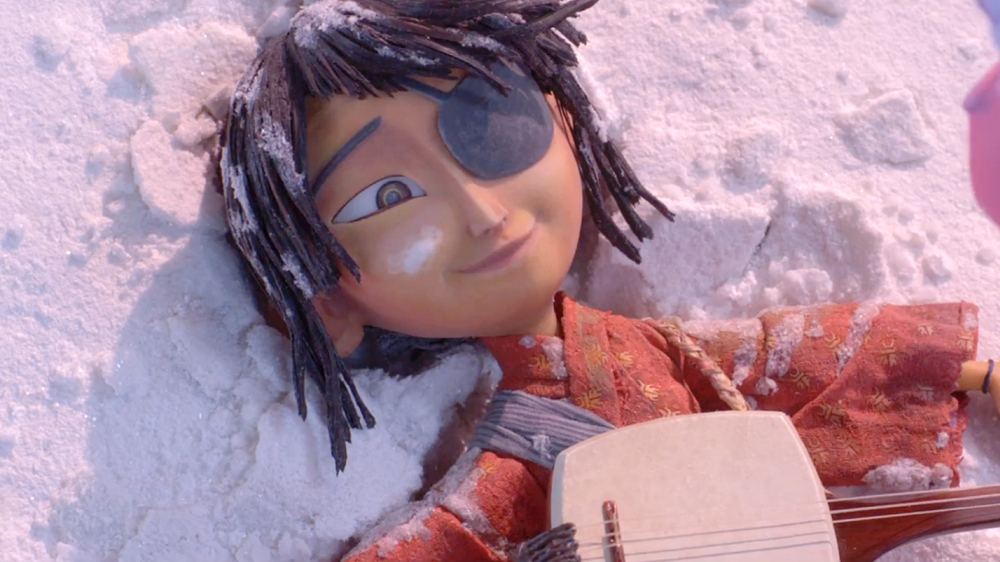

In feudal Japan, 12-year-old eyepatched Kubo tends to his ill mother Sariatu (who bears a scar over her left eye as the result of a sailing accident at the beginning of the film) in a mountain cave near a small village. He earns their living by magically manipulating origami with music from his shamisen for the townsfolk, telling the tale of his deceased father Hanzo, a samurai warrior. Kubo is never able to finish his story, as he does not know how Hanzo died and his mother herself cannot recall the ending due to her mental state deteriorating. Sariatu warns him not to stay out after dark as her Sisters, Karasu and Washi, and his estranged grandfather, the Moon King (who took Kubo's eye when he was a baby) will find him and take his remaining eye. One day, Kubo learns of the village's Bon festival allowing them to speak to deceased loved ones. Kubo attends but is angry that Hanzo does not appear from his lantern, and forgets to return home before sunset. Karasu and Washi quickly find him and attack, but Sariatu suddenly appears and uses her magic to send Kubo far away, telling him to find his father's armor while she fights off her Sisters before the screen goes white. Kubo wakes up in a distant land during a blizzard to find Monkey, his wooden snow monkey charm, who has come to life. While taking shelter inside the mangled corpse of a whale, Monkey tells him Sariatu is gone and the village destroyed. With help of "Little Hanzo", an origami figure based on Kubo's father, they set out to find the armor. Along the way, they meet Beetle, an amnesiac samurai who was cursed to take the form of a stag beetle/human hybrid but believes himself to have been Hanzo's apprentice in the past.